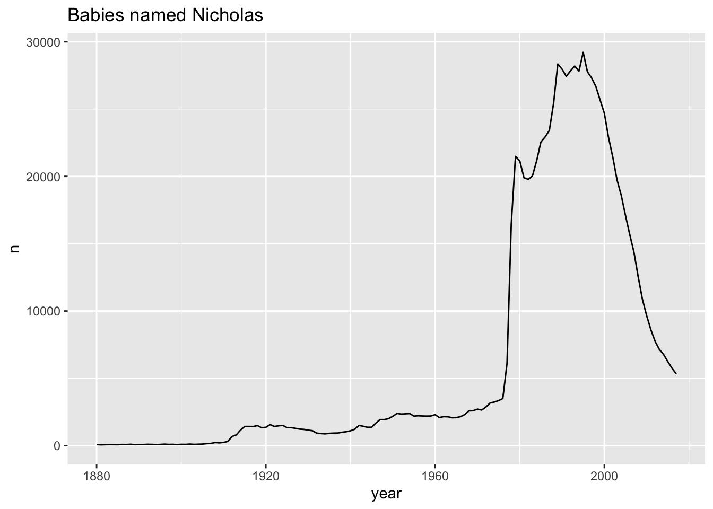

library(tidyverse)
library(babynames)
#view(babynames)Write Functions
This in class activity was
Datasets
We will use the babynames dataset and the congress_age dataset included in the fivethirtyeight package we used in Lab 4.
The babynames dataset contains for each year from 1880 to 2017 the number of children of each sex given each name (as recorded by the US Social Security Administration). All names with more than 5 uses are given.
The congress_age dataset contains the age of members of the United States congress over the years.
User-defined Functions
Exercise 1
Write a function called count_name that, when given a name (e.g.,Angelica, Ezekiel, or Riley) as an argument, returns the total number of births by year from the babynames data frame in the babynames package that match that name.
# Write your code below
count_name <- function(data = babynames , nombre = "Nicholas"){
if(is.element(nombre, babynames$name)) {
data |>
filter(name == nombre) |>
group_by(name,year) |>
reframe(year= year, n = sum(n))
}
else{
stop("Name not found")
}
}Bonus!
The count_name function should return one row per year that matches (and generate an error message if there are no matches). Run the function once with the argument Ezekiel and once with Ezze.
# Paste the code from Exercise 1 below and adjust it
count_name(data=babynames, nombre = "Ezekiel")# A tibble: 141 × 3
name year n
<chr> <dbl> <int>
1 Ezekiel 1880 16
2 Ezekiel 1881 22
3 Ezekiel 1882 11
4 Ezekiel 1883 14
5 Ezekiel 1884 13
6 Ezekiel 1885 10
7 Ezekiel 1886 17
8 Ezekiel 1887 11
9 Ezekiel 1888 16
10 Ezekiel 1889 14
# ℹ 131 more rows#count_name("Ezze")Exercise 2
Write a function called grab_name that, when given a name and a year as an argument, returns the rows from the babynames data frame in the babynames package that match that name for that year (and returns an error if that name and year combination does not match any rows). Run the function once with the arguments Ezekiel and 1883 and once with Ezze and 1883.
Challenge: Add an else if after your if and before your else to catch an error if people choose a year less than 1880 (outside of the range of our data).
# Write your code below
library(tidyverse)
library(babynames)
grab_name <- function(data = babynames, nombre ,ano ){
if(is.element(nombre,babynames$name)) {
data |>
filter(name == nombre & year == ano) |>
pull(name,year)
}
else if(ano < 1880){
stop("Choose a year after 1880")
}
else{
stop("Name and year not found")
}
}
grab_name( nombre = "Samantha", ano = 1950) 1950
"Samantha" Writing Functions to Create Plots
Exercise 3
Write a function called count_name_graph() that will use the function countname() to make a line graph that plots the year and the number of babies in a given year. The graph’s title should be “the”Babies Named (name of baby)” . The paste() function in r will help with your title, use it to put two strings together. Label your x and y axes.
# Write your code below
count_name_graph <- function(data, nombre = "Nicholas"){
count_name(data, nombre )|>
ggplot(aes(x=year, y=n))+
geom_line()+
labs(title = paste("Babies named", nombre))
}
count_name_graph(data=babynames, nombre = "Nicholas")
Generalizing Functions for Data Frames
library(fivethirtyeight)
view(congress_age)Exercise 4
Write a function called summary_prop that will take a data frame as an argument, filter to a condition, and compute the proportion of that condition.
Run the function with the arguments congress_age and age >= 25 & age <= 55 .
You can use your function on count_name("Ezekiel"), n>100. (Note: You probably used summarize() for the code for exercise 1, that sometimes returns grouped data. This code will work better if you add a pipe to an ungroup(). Alternatively you can just use reframe() instead of summarize()).
# Write your code below
summary_prop <- function(data, condition){
data |>
filter( {{condition}} )|>
summarise(
number_with_condition = n(),
prop_w_condition = number_with_condition/nrow(data)
)
}
summary_prop(data=congress_age, condition = age >= 25 & age <= 55)# A tibble: 1 × 2
number_with_condition prop_w_condition
<int> <dbl>
1 10657 0.572summary_prop(data=count_name(data = babynames, nombre = "Ezekiel"), condition = n>100)# A tibble: 1 × 2
number_with_condition prop_w_condition
<int> <dbl>
1 44 0.312